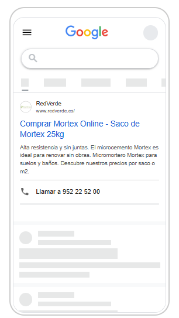
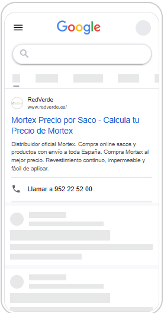
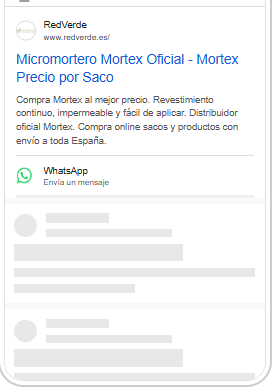
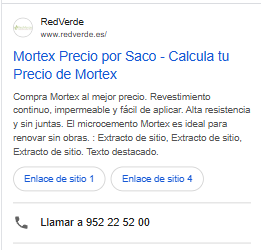

Publicidad en Google · Marca Mortex · Cierre de mes
Julio cierra con 13 contactos, y cada uno cuesta casi la mitad.
El mes completo confirma lo que apuntaban los primeros días: la campaña ya rueda, trae clientes potenciales y cada vez de forma más eficiente. Aquí tienes el resumen, sin tecnicismos.
Julio de un vistazo
1.026
veces que se mostró tu anuncio
142
personas entraron en la web
13
contactos comerciales
188,62 €
invertidos en el mes
Y lo más importante: cada contacto ha costado 14,51 € de media, frente a los ~25 € de los primeros días. A menos coste, más clientes por el mismo presupuesto.
El aprendizaje está dando frutos
Recordemos que es una cuenta prácticamente nueva y Google necesitaba unas semanas para aprender a quién mostrar tu anuncio. Ese aprendizaje ya se nota: el coste por clic ha bajado de 2,04 € a 1,33 € y los contactos se han acelerado en la segunda mitad del mes.
Fase 1 · Completada
Aprendizaje
Google probó búsquedas y horarios durante las primeras semanas. Por eso al principio los resultados eran irregulares.
Fase 2 · Ahora
Rodaje
Ya afina a quién enseñar el anuncio. Se nota: el coste por contacto ha caído y los contactos se han disparado.
Fase 3 · Próximo mes
Rendimiento estable
Resultados más constantes y coste por contacto aún más bajo a medida que se acumula historial.
Contactos acumulados durante el mes. En los primeros 9 días llegaron 2; en las tres semanas siguientes, 11 más. La curva se empina justo cuando Google termina de aprender.
Así se ven tus anuncios en Google
Esto es lo que ve una persona en su móvil cuando busca «mortex», «microcemento» o «mortero de cal». Google va combinando distintos titulares y muestra en cada búsqueda la versión que cree que funcionará mejor.
Microcemento Mortex · Precio m² Con botón de llamada directa.Llamada

Comprar Mortex Online · Saco 25 kg Enfocado a la venta del producto.Llamada

Calcula tu Precio de Mortex Distribuidor oficial, envío a toda España.Llamada
Microcemento Mortex · Suelos «Renovar sin obras» como gancho.Llamada
Revestimiento Mortex Otra combinación de titulares que prueba Google.Variante

Micromortero Mortex Oficial Aquí aparece el botón de WhatsApp.WhatsApp

Mortex Precio por Saco Con enlaces extra a otras páginas de la web.Enlaces + Llamada
El teléfono (952 22 52 00), el botón de WhatsApp y los enlaces extra son añadidos gratuitos que dan más formas de contacto directo. De hecho, este mes han entrado contactos por los tres caminos: formulario, WhatsApp y llamada.
El recorrido: de una búsqueda a un contacto
No todo el que ve el anuncio entra, y no todo el que entra deja sus datos. Así se estrecha el «embudo» en cualquier campaña. Estos son tus números reales de julio:
1.026
veces que apareció el anuncio
↓ 14 de cada 100 hacen clic y entran en la web
142
visitas a la web
↓ 9 de cada 100 visitas dejan sus datos
13
contactos comerciales
Que 14 de cada 100 personas hagan clic es una cifra muy buena (lo normal ronda 3–5). Y que 9 de cada 100 visitas contacten confirma que llega gente realmente interesada.
Mejor de lo que anticipamos
En el informe de los primeros días hicimos una previsión prudente. El mes real la ha superado en las tres cifras que importan:
Lo previsto
Lo real
Visitas a la web
~98
142
Contactos comerciales
7–9
13
Coste por contacto
~25 €
14,51 €
El coste por contacto ha caído un 43 % en un mes.
Al principio, «Mortex» era la única palabra por la que competíamos y salía cara (2,04 € por visita). Al abrir la campaña a búsquedas de producto —microcemento, mortero de cal, revestimiento continuo— entra gente igual de interesada pero por bastante menos dinero. El coste medio por visita bajó a 1,33 € y arrastró todo lo demás.
De dónde vienen los contactos
Los 13 contactos del mes llegaron por tres vías distintas — señal de que ofrecer varias formas de contacto merece la pena:
11
por el formulario de la web
1
por WhatsApp
1
por llamada desde el anuncio
El grueso llega por la búsqueda «mortex» (6 contactos), pero también por términos de producto como «mortero de cal». Es la prueba de que ampliar más allá de la marca no solo abarata: también trae clientes nuevos.
Previsión para agosto
Julio deja la campaña rodada. Ahora mismo tu anuncio aparece en unas 19 de cada 100 búsquedas relevantes, así que todavía hay recorrido por delante conforme la campaña siga madurando.
19 %
81 % de búsquedas donde aún no apareces
~13
contactos previstos (mismo presupuesto)
~14 €
coste por contacto esperado
19 %
de búsquedas donde apareces hoy
~190 €
mismo presupuesto que julio
Un matiz honesto: agosto es mes de vacaciones y la demanda de reformas suele bajar algo, así que es una previsión prudente. Seguimos con el mismo presupuesto, exprimiendo al máximo lo que ya funciona.
Qué hacemos ahora
01
Sacar más del mismo presupuesto
Afinamos anuncios y pujas para que Google muestre tu anuncio en más búsquedas relevantes sin gastar más. Cada punto de calidad que ganamos abarata el clic y estira la inversión.
02
Seguir más allá de «Mortex»
Los términos de producto (microcemento, mortero de cal, revestimiento continuo) ya están trayendo contactos más baratos. Seguimos ampliando por ahí.
03
Limpieza semanal
Cada semana filtramos las búsquedas que no encajan (competidores, resinas epoxi, etc.) para no gastar de más. Ya se están excluyendo de forma sistemática.
Próxima revisión: primeros de septiembre, con el mes de agosto completo.